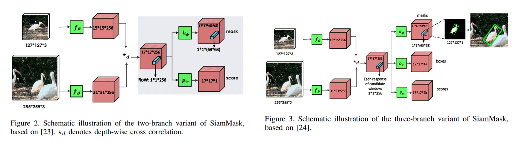
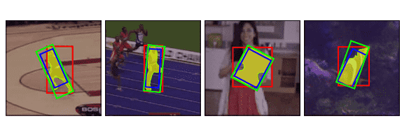
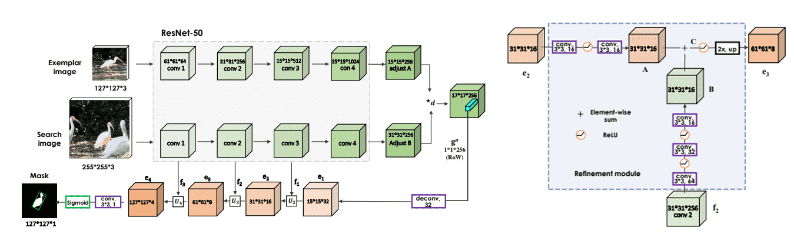

SiamMask
概述
- 兼顾视频对象分割与目标追踪。
- 由于是通过分割再根据掩码划出边缘框，拥有相当高的精度，但是也导致网络无法应对被遮挡的情况。
- 分为两个部分，其中第二个部分有两种结构：
- Siamese网络：分别提取template与search输入图像的特征，进行通道互相关。
- 第二部分：
- 二分支结构：
- Score 分支：目标是区分每个 row 是目标对象or背景。
- Mask 分支：为每个 row 输出一个分割掩码。
- 三分支结构：
- Mask 分支：为每个 row 输出一个分割掩码。
- Box 分支 & Score 分支：与 SiamRPN 中的一样，生成k个锚框，预测每个位置上的对象概率与回归个锚框的x,y,h,w。
- 二分支结构：
方法

Siamese 网络
与SiamFC不同的是，为了让每个 Row 编码更丰富的信息，将原始的简单互相关操作 替换为深度互相关 即每个 channel 单独计算互相关，最后拼接在一起，得到一个与template特征和search特征相同深度的响应图。
第二部分
由于三分支结构中的MaskBranch与二分支的一样、Box 分支与 Score 分支与 SiamRPN 一样，所以只将二分支结构。
Socre Branch
通过卷积层将相应图映射到单通道。
MaskBranch
利用一个vector来编码一个RoW的mask，导致特征图的通道数非常多, MaskBranch 使用 卷积来升维。此时的Mask精度不够，需要更精细的分割需要通过Refine Module来提升精度，但是对于生成边界框已经足够了。

三种生成边界框的方式：
- 包含对象的最小外接矩形（绿色）
- 包含对象的最小轴对齐矩形（红色）
- 通过优化策略获得的矩形（蓝色）
Mask损失：
其中 表示第 个 row 是前景（）还是背景（），当为背景时公式中的 即不计入损失，当为前景时，计算所有点上的二分类损失的平均值 ， 表示点 上是（）否（）遮罩， 是label， 越小时 越大， 也越大。
总体来说即为，Mask损失为所有前景的row的mask的所有点的二分类损失的平均值的和。
Refine Module

如果是进行分割，则不再使用MaskBranch，而是将Score分数最高的Row，进行上采样，生成高精度Mask。
将分数最高的 的Row，进行反卷积得到 的特征图，并与 Siamese 网络中保存的特征图进行卷积变换到通道数相同后逐元素相加，不断提高分辨率到 经过一层卷积与Sigmoid得到最终的 的Mask。
ArxivAll articles in this blog are licensed under CC BY-NC-SA 4.0 unless stating additionally.